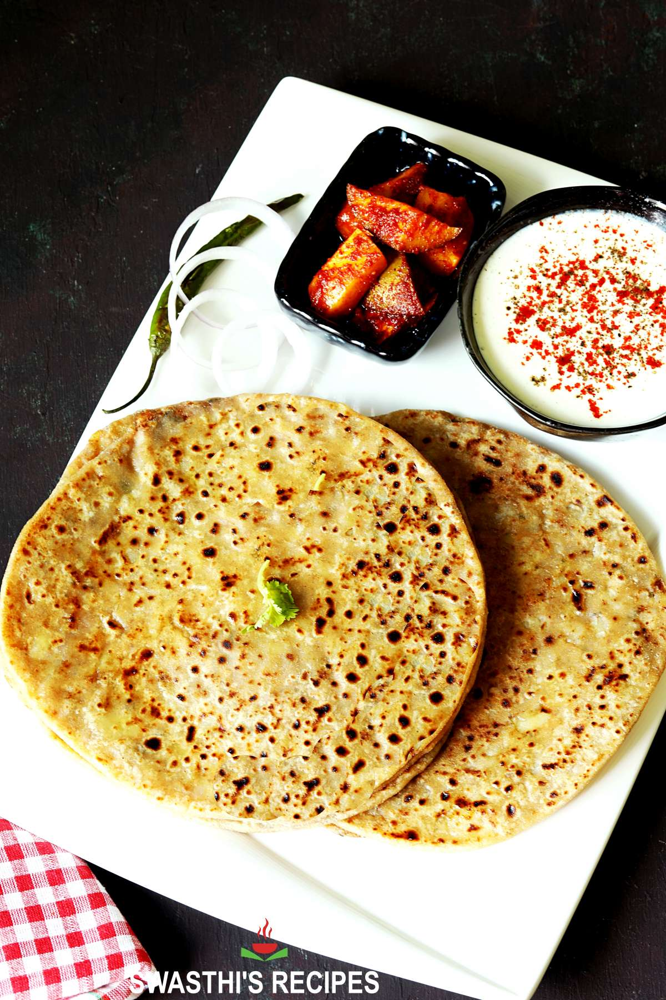

Aloo Paratha


Description
Aloo Paratha is a classic North Indian stuffed flatbread made with whole
wheat dough and a spicy, mashed potato filling. It’s warm, hearty, and
full of flavor — perfect for breakfast or a comforting meal. Served with
butter, curd, or pickle, it’s one of the most loved Indian dishes.
Ingredients
For the dough
- 2 cups whole wheat flour
- Water (as needed for kneading)
- Salt to taste
- 1 tsp oil (optional)
For the stuffing
- 3 medium potatoes (boiled & mashed)
- 1–2 green chilies (finely chopped)
- ½ tsp red chili powder
- ½ tsp turmeric
- ½ tsp garam masala
- ½ tsp cumin powder
- 1 tbsp chopped coriander
- Salt to taste
Steps
-
In a bowl, mix wheat flour, salt, and water to knead a soft dough. Rest
for 10 minutes.
-
Mix mashed potatoes with green chilies, spices, coriander, and salt to
prepare the stuffing.
- Divide the dough into medium-sized balls.
-
Roll one ball lightly, place stuffing in the center, and close the
edges.
- Roll again gently into a flat paratha.
-
Heat a tawa and cook the paratha on both sides with a little oil or ghee
until golden brown.
- Serve hot with butter, curd, or pickle.